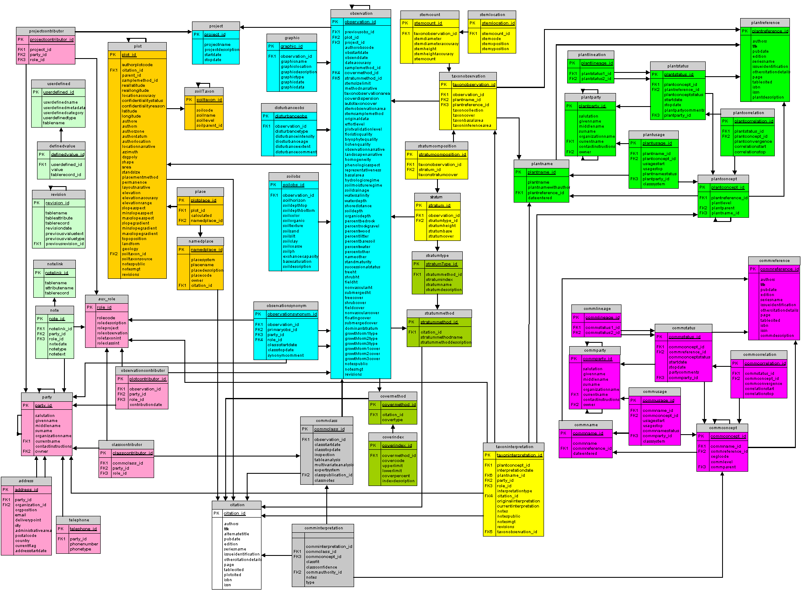

[Click here to see a higher resolution version of the diagram]
Light Green = Supplemental
Mustard= Plot
Blue = Observation
Yellow = Taxon observation
Rose = Party
Gray= Observation interpretation
Olive= Method
White = Citation
Green = Plant taxonomy
Purple = Community taxonomy
